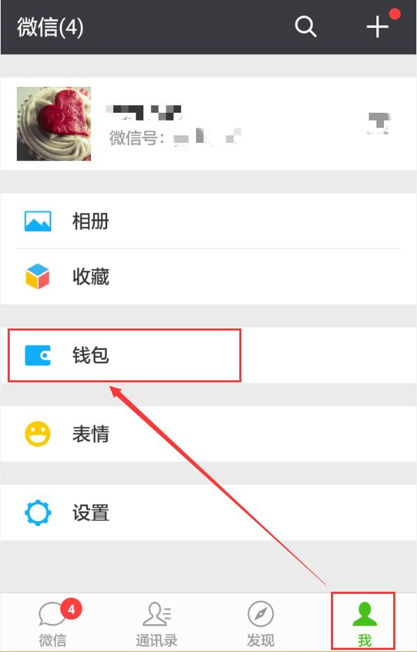
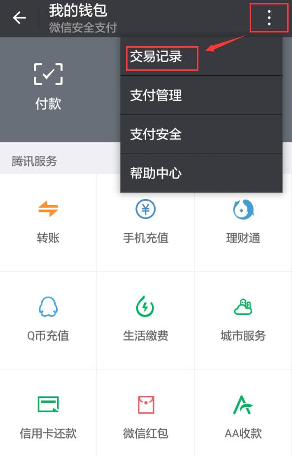
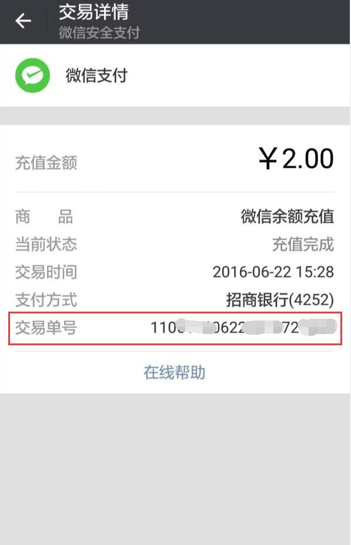

<div>
  <div class="accordion-group">
    <div class="accordion-heading">
      <a class="accordion-toggle accordion-question"
         data-toggle="collapse" data-parent="#jsHcAccordion" href="#function1">
        微信充值电子回执单查询方法
      </a>
    </div>
    <div id="function1" class="accordion-body collapse">
      <div class="accordion-inner accordion-answer">
        <p>
          在微信菜单栏里，找到“我”—“钱包”
          </p>
        <p class="thumbnail inline-block">
          
        </p>
        <p>
          点击右上角标识，选择“交易记录”
        </p>
        <p class="thumbnail inline-block">
          
        </p>
        <p>
          您可以查询到微信支付的详情
        </p>
        <p class="thumbnail inline-block">
          
        </p>

      </div>
    </div>
  </div>

</div>
